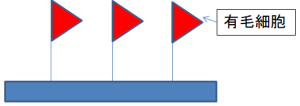
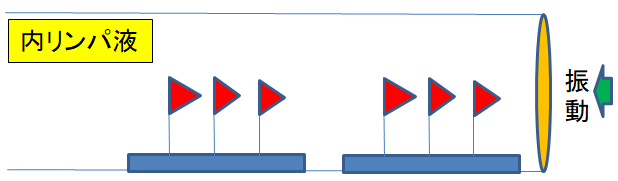
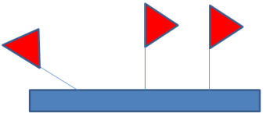
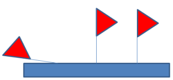
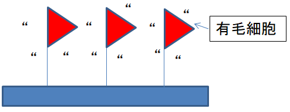

突発性難聴、急性低音型感音性難聴、メニエール病でお困りの方はTeaching Beauty鍼灸マッサージ整骨院へ。
電話でのご予約・お問い合わせはTEL.03-6413-7803
〒154-0014 東京都世田谷区新町3-21-1さくらウェルガーデン３F
聴力の伝わり方How to hear
突発性難聴、メニエール病 、低音障害型感音難聴専門鍼灸院
【聴力の伝わり方とは】
人間が耳で聞く時に体の中でどうなっているかを説明します。
人が音を聞く時の音の伝達は、まず耳で音を集めて、その音が外耳道を通って鼓膜を震わせます。例えると、太鼓を鳴らすと太鼓の皮の部分（鼓膜）が振動しているのと同じです。
鼓膜の奥にある中耳には人体最小の骨と呼ばれる耳小骨「ツチ骨、キヌタ骨、アブミ骨」の3つの骨があります。
鼓膜に伝わった振動がこの骨に届き、カサカサと骨が振動し更に振動を増強して内耳へと伝えます。
この振動が内耳にある蝸牛へと伝わり、蝸牛の中のリンパ液に波を起こし、その波の揺れが電気信号へと変わり内耳神経を伝わって脳へと伝わり『音』として感じることができるのです。
この伝導のルートである内耳に問題が発生すると脳への電気信号が小さくなってしまい、
難聴になってしまいます。

【難聴について】


上記の図は蝸牛の中を表します。
フラッグ（旗）は有毛細胞を表しています、 蝸牛の中には有毛細胞（フラッグ）が150万本あり、これが揺れることによって我々が聞いた音を電気信号に変えて脳に伝えるということができます。
鼓膜で集めた音の振動が蝸牛の中に入り、内リンパ液で満たされている蝸牛内に振動が伝わり、波が起こります。 その波で有毛細胞（フラッグ）が動いて脳に電気信号として伝わります。その結果、音を感じることができるのです。
振動が入ってくる手前（鼓膜に近い方）の有毛細胞（フラッグ）は高い音の時に揺れ動きます。
でんでん太鼓などの高い音は近くの人にしか聞こえませんよね？年末に鳴らす大きな太鼓は遠くまで届くことができるのです。
つまり、高い音は手前までしか届かない、低い音は遠くまで届く。
これは、鼓膜の手前にある、有毛細胞は高音域の際に反応し、内耳の奥にある有毛細胞は低音域の時に反応するのです。
では、声の元々を考えてみましょう。 女性が声が高いのは、村などの集落の女性達と村の中で家事をしたりと近くの人としか話さないから高い音なんだと言われています。
しかし、男性は狩猟をしたりして仲間同士で遠くに声を伝えないといけないために低い声になったとも言われています。低い声の方が遠くまで届くからなのです。
そのため、高い音は近くにしか聞こえません。低い音は遠くまで聞こえます。
つまり、高い音は手前の有毛細胞（フラッグ）を動かし、低い音は奥の方の有毛細胞（フラッグ）まで波の力を伝えることができるのです。
よって、鼓膜に近い方が高い音を担当している有毛細胞（フラッグ）がいる。
鼓膜から遠い方が低い音を担当している有毛細胞（フラッグ）がいるということになります。 鼓膜から近い方の有毛細胞は低い音でも、高い音でもどちらの場合にもフラッグに波が伝わるために刺激を受けます。
そのため、年を重ねていくにつれて、いつもいつも音を聞いていて、手前側の有毛細胞（フラッグ）が常に使われていることになってしまうので有毛細胞（フラッグ）がくたびれて、高音域の音が聞こえなくなってしまいます。
そのため、年齢が高くなればなるほど、音が高い音は聞こえなくなってしまいます。
子供の頃は、モスキート音（超高音域音）が聞こえたけど大人になるにつれてだんだん聞こえなくなるのは、手前側の有毛細胞（フラッグ）が常に刺激を受けて有毛細胞（フラッグ）がくたびれて起き上がれない状態になってしまったからなのです。
難聴の原因は蝸牛の中の有毛細胞（フラッグ）が倒れてしまってなります。


上右の図のように、有毛細胞が完全に倒れてしまっている状態だともう元に戻ることはできません。
しかし、上左の図のように、日常的な疲労、一時的に大きな音を聞いたりして疲れた有毛細胞（フラッグ）の傾きであれば通常8時間休息を取れば元に戻ると言われています。長くても2~3日すれば元に戻ると言われています。
例えば、テレビを夜見ていてから寝て、朝起きてからテレビをつけるとテレビの音が大きく聞こえることがあると思います。 これは、朝から夜まで色々な音の刺激により有毛細胞（フラッグ）がくたびれている状態になっているため夜は音が聞こえにくい状態になっているのです。
また、朝起きると有毛細胞が休息されて元の状態に戻っているため、朝テレビをつけるとうるさく感じてしまうのです。
聴力検査では、朝検査するのと夜検査するのでは聴力が1/5も低下すると言われています。
【耳鳴りとは】
耳鳴りは有毛細胞が常に誤作動を起こして、ず~っと揺れてしまっているために電気信号を常に脳に送ってしまっているために耳鳴りとして聞こえてしまうのです。

【耳の聴力の感度について】
通常の生活を送っている人の場合、20歳から10年後の30歳の段階で耳の感度は67％低下すると言われています。
また、30年後の50歳で耳の感度は75％低下すると言われています。
つまり、50歳の人は耳の感度が20歳の時の1/4になってしまっているのです。
施術にかかる時間
症状により異なりますが、施術時間は下記を目安として下さい。初診時 60～90分程度
※初診時は問診表の記入や初回検査、しっかりと丁寧な問診を行いますので多めに時間がかかります。
2回目以降 60分程度
場合により上記の目安時間より長くかかることもありますので、お時間には余裕を持ってご来院ください。
服装・持ち物
鍼灸施術を行う際は当院で患者着をご用意しております。そのため、どのような恰好でいらしていただいても問題ありません。
個室治療のため、 着替えのスペースもございます。
持ち物としては、病院でのオージオグラムをお持ちください。
病院でもらっていないという方はかまいません。
施術料金
| １回 | \30,000(税別) |
|---|---|
初回の施術から耳が良くなるのを実感いただける方が多いです。
回数券12回 \300,000（税別）回数券の場合66,000円お安くなります。
(回数券の場合1回あたり\25,000となります。)
【病院での治療費のおよその金額】
・人工内耳手術 400万円
・病院での入院10日 30~60万（治癒率30％）
・高酸素療法治療 30~40万（治癒率30％）
・補聴器 15~40万(高度難聴では使えません)
※突発性難聴の患者様のみ現在は初検料3,240円が無料となっております。
また、しっかりと耳の事や施術方針などを相談して直接会って話をしてから治療をするか決めたいということもできます。
しかし、初検時に『無料相談会』でいらっしゃる患者様の場合は初検で治療のお時間が取れなくなりますので別日での施術となることをご了承下さい。
初検時に相談のみでご来院したい方は必ず、『無料相談会にでたい』とメールもしくは電話予約時にお知らせください。
▶無料相談はこちらへ
▶耳鳴り、耳閉塞感、難聴について
▶メニエール病について
▶急性低音障害型感音難聴について
▶突発性難聴について
Ｔｅａｃｈｉｎｇ Ｂｅａｕｔｙ

〒154-0014
東京都世田谷区新町3-21-1
さくらウェルガーデン301号室
TEL：
03-6413-7803
→アクセス
診療時間（24時間診療）
通常診療
月火金土日／9:00～19:00
木曜日 ／15:00～19:00
※当日予約。
夜間診療
月火木金土日
／19:00～23:00
※通常価格の1.5倍料金
※当日の19時までにご予約下さい。
深夜・早朝診療
月火木金土日
／23:00～翌9:00
※通常価格の2倍料金
※当日の19時までにご予約下さい。
休診日
木曜午前、水曜日、祭日
交通事故・労災・
各種保険取扱い